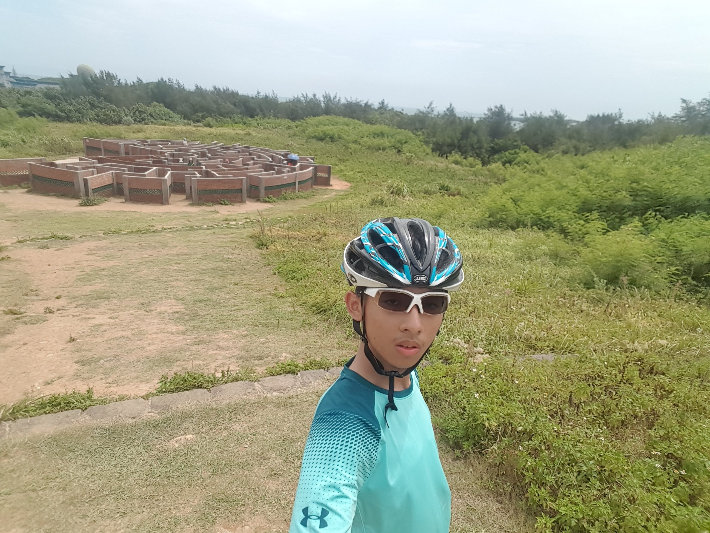
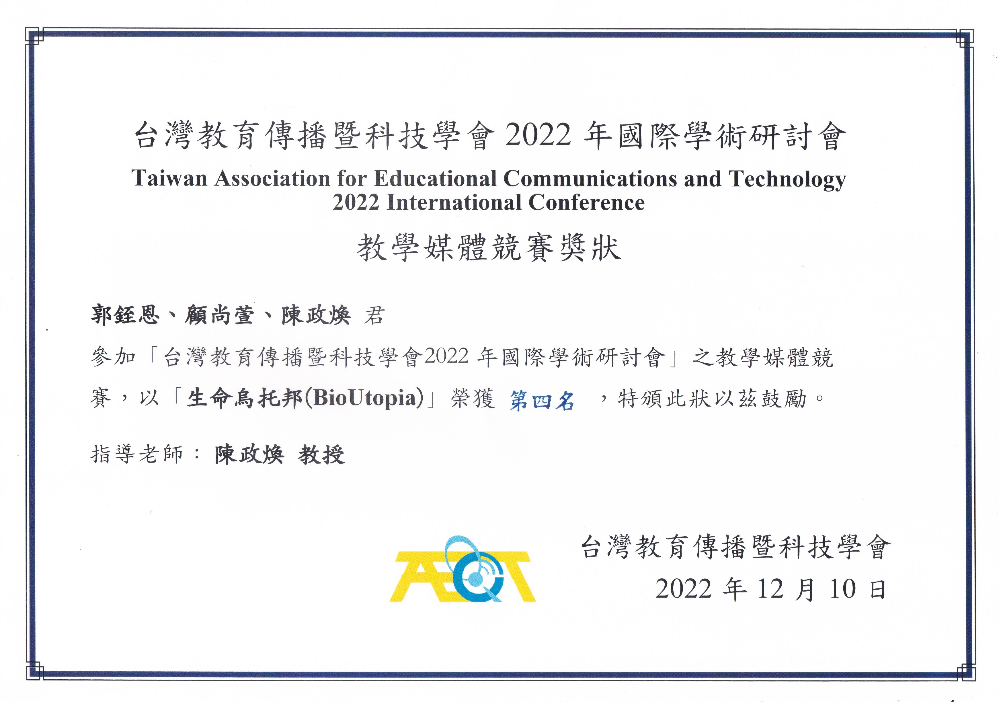
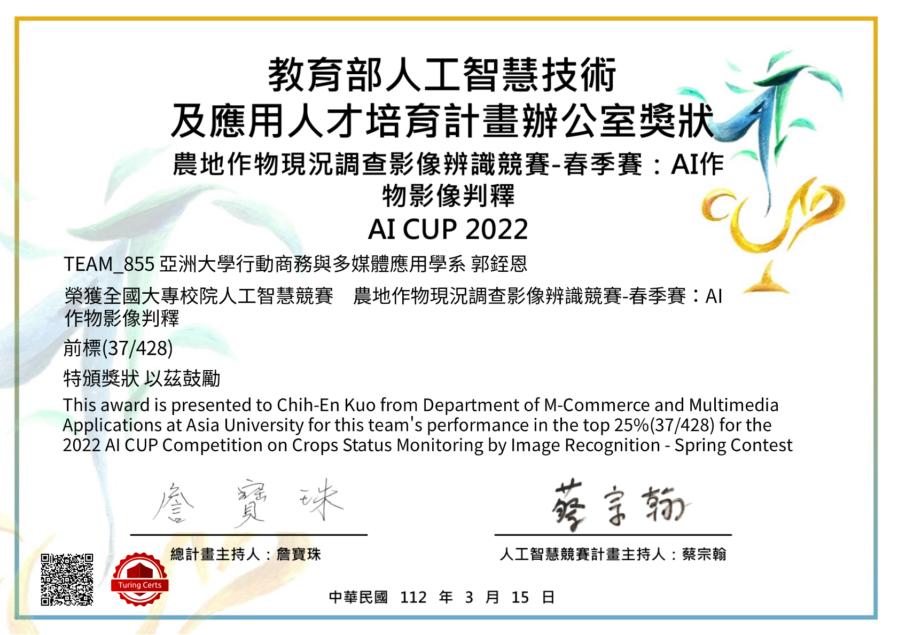
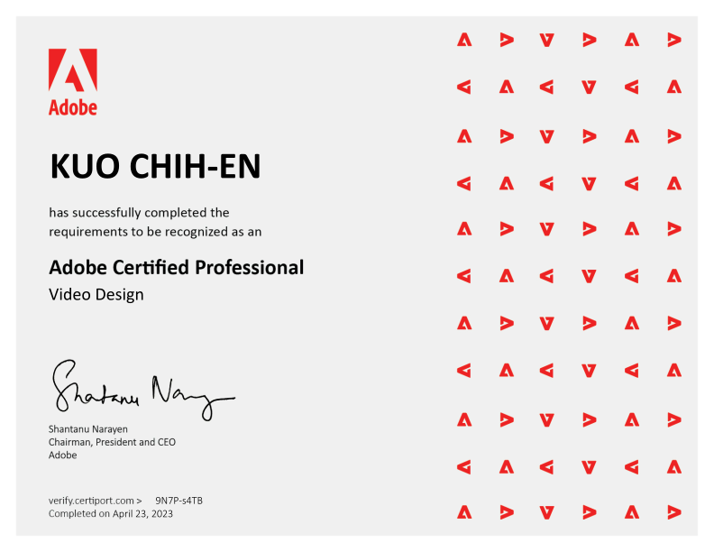
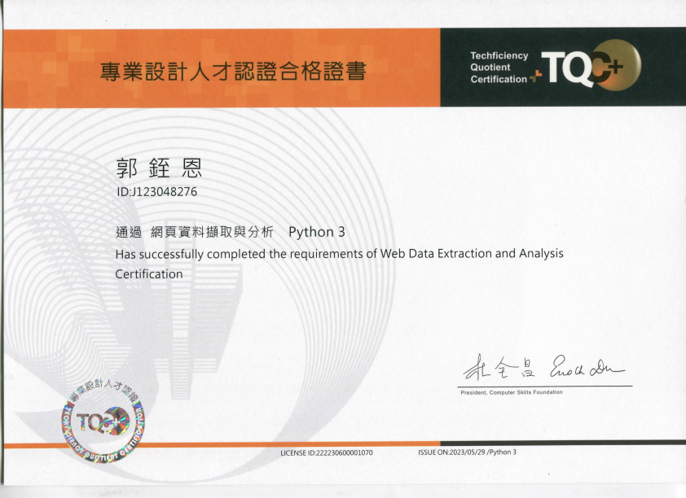
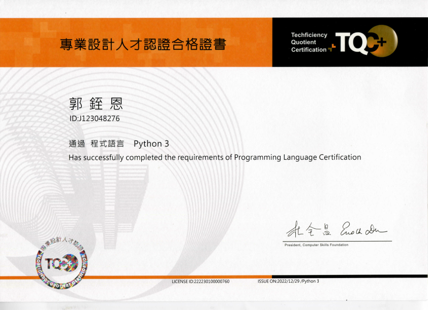
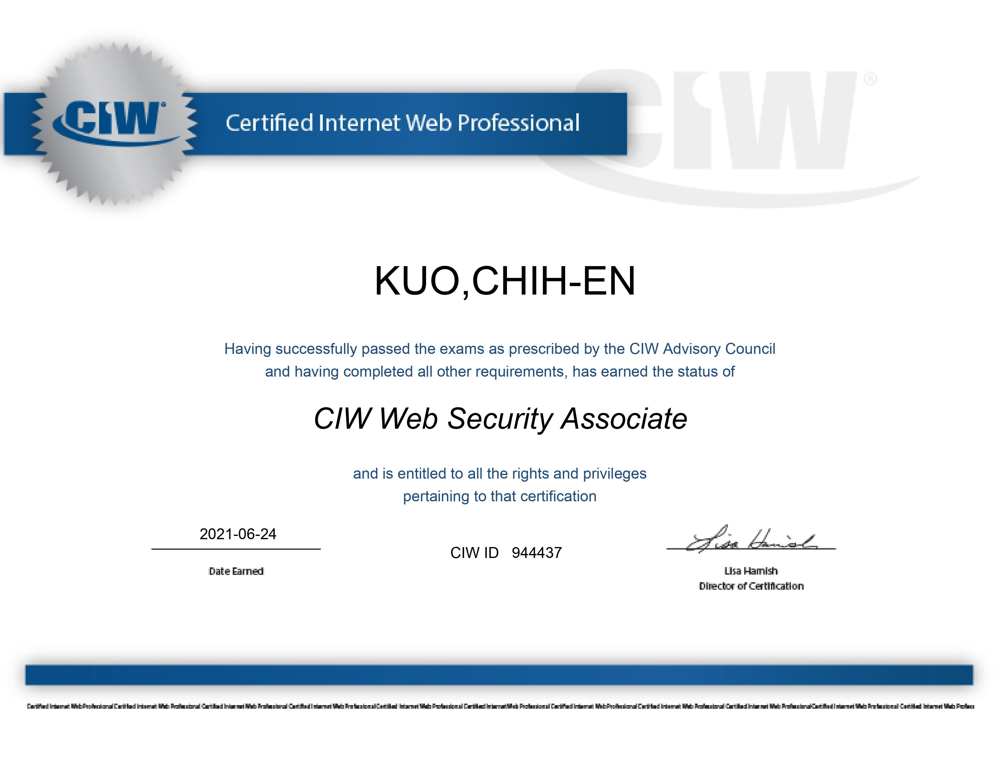
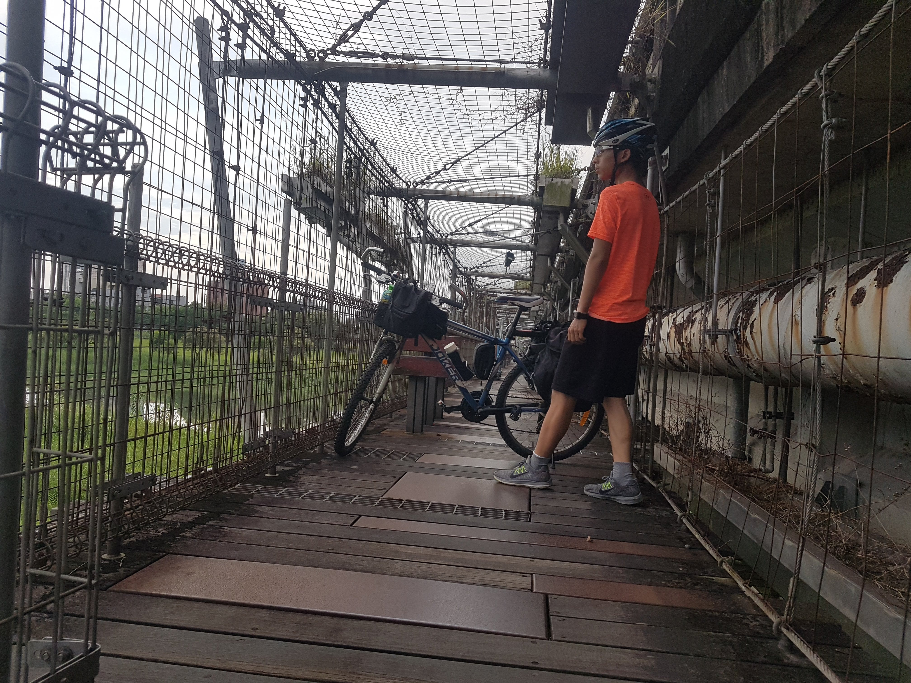

About
Zhuyin
Master’s graduate · Open to software, IT & MIS roles
I go by Zhuyin. I have completed my master’s studies at National Central University’s Graduate Institute of Network Learning Technology and am seeking software development, information systems, and MIS roles. At Asia University, I majored in M-Commerce and Multimedia Application with a second major in Computer Science and Information Engineering, and also took psychology courses.
I enjoy turning problems into working tools: educational games with Unity and C#, crop image classification with Python and PyTorch, and web development using PHP, MySQL, HTML, and CSS. My master’s thesis project lets students interact with AI through drawings and text to solve mathematics problems.
From blogging in high school to assisting at children’s programming camps, I learn through building, teaching, and documenting. Independent learning, willingness to try, and attention to users shape how I approach projects.

永遠相信美好的事即將發生Projects and implementation
All projects →Master’s thesis · Web application
Making Thinking Visible: AI Mathematics Companion
Independently built a mathematics learning system combining an interactive canvas and cooperating AI agents. Students express their reasoning through handwriting, drawings, and text, receiving guidance adapted to their problem-solving stage.
My contribution
Independently developed the complete system, including the interactive canvas, backend and data records, AI-agent coordination, prompt strategies, and feature integration. Questionnaires and scales used for research analysis drew on published literature and instruments used by senior researchers.
University project · TAECT 2022 fourth place
Dreaming about Health and Biology · BioUtopia
An interdisciplinary role-playing game connecting junior-high biology and health education through analogy-based learning. It received fourth place in the TAECT 2022 digital media competition and led to a conference paper at TWELF 2023.
My contribution
Built many of the game scenes and wrote C# code. Prepared questions and learning content by reviewing the Grade 7 biology curriculum and digital education research, working with teammates on the Unity educational game.
NSTC research project · Unity/VRChat SDK development
Advancing metaverse education: Exploring new possibilities of immersive VR-based collaborative learning
Led the Unity and VRChat SDK development of an immersive learning environment for Meta Quest 2, enabling junior-high students to interact in a virtual world and explore sustainability-related content.
My contribution
I led the Unity/VRChat SDK learning-environment development, discussing requirements with one collaborator, assigning development tasks, and integrating the results.
Technologies I have learned and used
- Python
- C#
- PHP
- Java
- JavaScript
- HTML5 / CSS
- MySQL
- PyTorch
- TensorFlow
Development & creative tools
- GitHub
- Unity
- Visual Studio Code
- Microsoft Office
- 3ds Max
- Adobe Photoshop
- Adobe Premiere Pro
- WordPress
- Git
- AWS
- Microsoft Azure
- Ubuntu
Education
Graduate Institute of Network Learning Technology · Master’s degree
Completed. Graduate study focused on research methods, learning technologies, and AI system implementation. My master’s thesis independently delivered a web system in which students use drawings and text to interact with AI for mathematics problem solving.
M-Commerce and Multimedia Application · Double major in Computer Science and Information Engineering
Completed my undergraduate degree with coursework in web development, programming, databases, artificial intelligence, Unity/XR, multimedia, and digital learning. In M-Commerce coursework, I also learned the roles and basic purposes of CRM, ERP, and MIS.
I took part in a digital educational game project, conference publications, and an AI image-recognition competition.
Early education (K–12) 1
Before university (K–12)
I began exploring websites and programming in high school and built a personal blog, which became the starting point for my later work in web and information technology.
Competition results
2022
Fourth place
TAECT digital media competition
Digital educational game project: Dreaming about Health and Biology.
{kind=link}

Related project：Dreaming about Health and Biology · BioUtopia ↗
View result2022
Team ranked in the top 25%
AI CUP crop image-recognition competition · Spring
National AI competition for university students; crop image interpretation project.
{kind=link}

Teaching & activities
Programming camp teaching assistant
Coding Ape offers children’s programming camps involving Minecraft, Python, and APCS-related learning through hands-on activities and tasks.
As a teaching assistant, I helped students understand questions, work with programs, and complete learning tasks, adapting support to different ages and learning progress.
Children’s camp teaching assistant
Nianbada Childhood School focuses on children’s play and outdoor experiences. Its Treetopia play space in Zhubei, Hsinchu brings together traditional games, nature activities, and hands-on building to encourage exploration and cooperation.
As a camp teaching assistant, I supported mixed-age groups in team tasks, outdoor games, and activities, developing experience in facilitation and communication.
Children’s camp activity staff
Participated in children’s camps with the Humanistic Education Foundation, supporting exploration, cooperation, and challenges through outdoor activities and group tasks. As an activity staff member, I supported camp delivery and accompanied students, developing experience in working with children and responding to on-site needs.
Children’s reading volunteer
Volunteered in church-based children’s reading activities, using reading support and interaction to help children engage with learning while developing communication skills and awareness of different learning needs.
Certificates
MOS Excel
English certificate{kind=link}
ACP Video Design（Photoshop 與 Premiere）
{kind=link}

English certificateTQC+ 網頁資料擷取與分析 Python 3
{kind=link}

English certificateTQC+ 程式語言 Python 3
{kind=link}

English certificateMTA HTML5 Application Development Fundamentals
English certificate{kind=link}
CIW Web Security Associate
{kind=link}

English certificatePublications
View all publications 8
2026 · Global Chinese Conference on Computers in Education · Conference paper · Hong Kong, China
從溫暖的夥伴到得力的教練：為小學生設計一款人性化的AI閱讀同伴
Designed an AI reading companion that adapts its role across stages of human–AI relationship development, balancing emotional support and reading guidance. A four-week pilot involved seven fifth graders, with an in-depth analysis of one sustained user. The findings are exploratory and do not establish long-term effectiveness.
2026 · Taiwan E-Learning Forum · Conference paper · Nantou, Taiwan
基於情境工程之長期適性化AI閱讀同伴系統設計
Presented an AI reading companion built around a student model, context engineering, and cooperating agents. Reading records, conversations, and long-term summaries inform interaction stages and response strategies. An avatar, voice and text interaction, and dashboards make the evolving reading context and companion relationship visible.
2025 · Global Chinese Conference on Computers in Education · Conference paper · Wuxi, China
AI閱讀遊戲：結合AI打造多角色線上互動平台提升閱讀動機
Designed a multiplayer reading game using Azure AI, with AI animal companions, cooperation and competition, and feedback from an AI game host. The paper describes roles and game mechanics and plans questionnaire and conversation analyses of reading motivation. It primarily reports system design and a research plan.
2025 · Taiwan E-Learning Forum · Conference paper · Chiayi, Taiwan
探討家庭閱讀對學生互動和學習行為的影響
Designed a parent–teacher–student reading community connecting home and school through book registration, reading photos, book-talk videos, discussions, and feedback. Shared records support collaboration, with planned analyses of reading habits and interaction patterns. Data were still limited, so effectiveness remained to be studied.
2024 · Global Chinese Conference on Computers in Education · Conference paper · Chongqing, China
支持學生於沉浸式虛擬實境社交互動並結合STEM與SDGs的學習環境開發
Developed a VRChat learning environment integrating STEM and the SDGs for junior-high students using head-mounted displays. The Climate Action theme connects sea-level rise, the greenhouse effect, and energy technology through interactive objects, multimedia, and social discussion. The contribution centers on environment design and development.
2024 · Global Chinese Conference on Computers in Education · Conference paper · Chongqing, China
紙筆遊戲不僅是遊戲：探討非數位國小數學教育的遊戲式學習
Proposed a study integrating three low-cost paper-and-pencil games into mathematics lessons for third and fourth graders. The design compares game-supported and conventional teaching using interest and self-efficacy measures, questionnaires, and interviews. The paper presents a research method, rather than verified learning gains.
2024 · International Conference on Computers in Education · Conference paper · Manila, Philippines
Supporting Teacher-Student Book Talk and Book Wish Lists with AI-Driven Technology
Used teacher interviews and design-based research to digitize book wish lists, reading histories, and teacher–student book-talk records, with AI support for processing conversations and suggesting follow-up questions. Feedback from five teachers described benefits for record management and book-talk support, alongside additional content-management work.
2023-03 · Taiwan E-Learning Forum (TWELF 2023) · Conference paper · Pingtung, Taiwan
以類比學習為基礎開發之國中生物與健康跨領域角色扮演遊戲
Developed an interdisciplinary role-playing game connecting junior-high biology and health education. Stories, analogous scenes, and tasks address nutrition, transport, coordination, and homeostasis. The paper explains how curriculum content becomes a game environment and presents the research behind Dreaming about Health and Biology / BioUtopia.
Travel & life
Take curiosity on the road,
keep learning in new places.
I follow technology news, especially new phones, wearables, and computer hardware. Outside work, I enjoy travelling, chess, Reversi, cycling, badminton, and bowling. After high school, I cycled around Taiwan and documented the journey on my blog; when attending conferences, I also make time to explore the host city. I have also accompanied students cycling from Hualien to Taitung and taken part in children’s camps and church reading activities.
